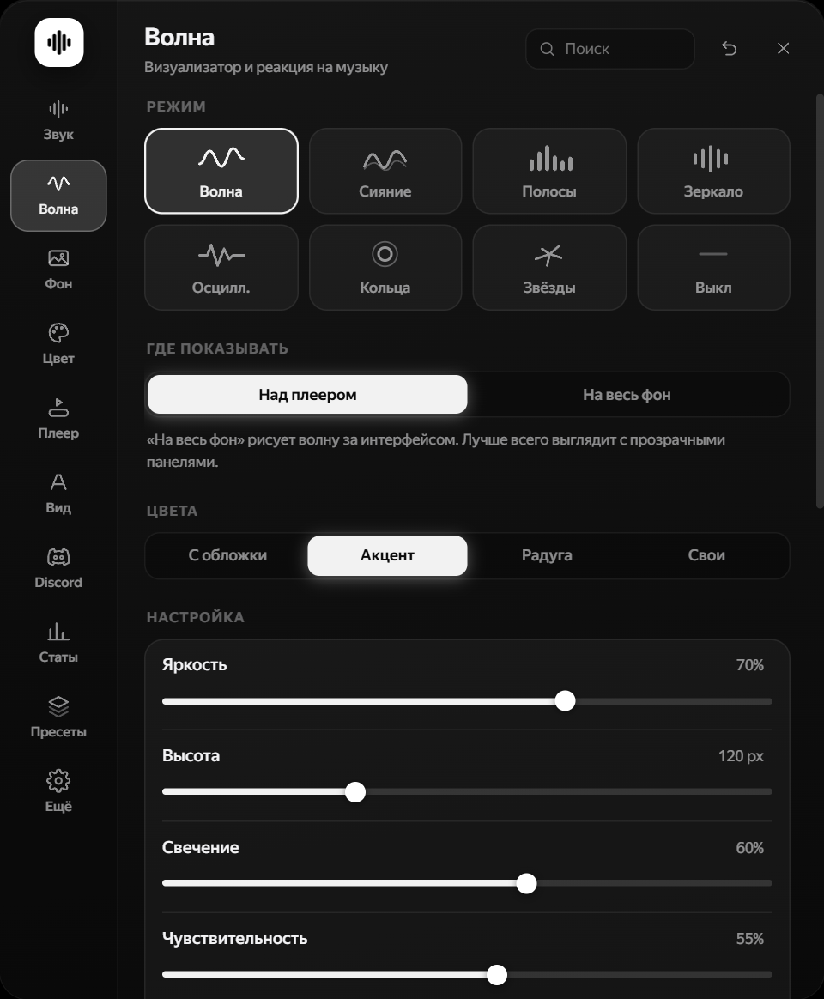
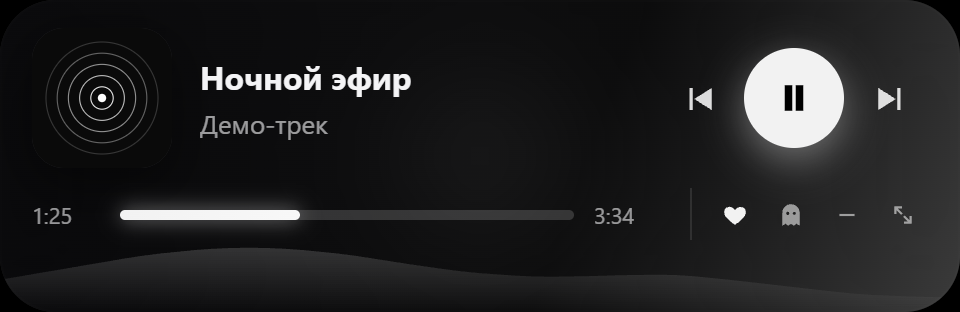
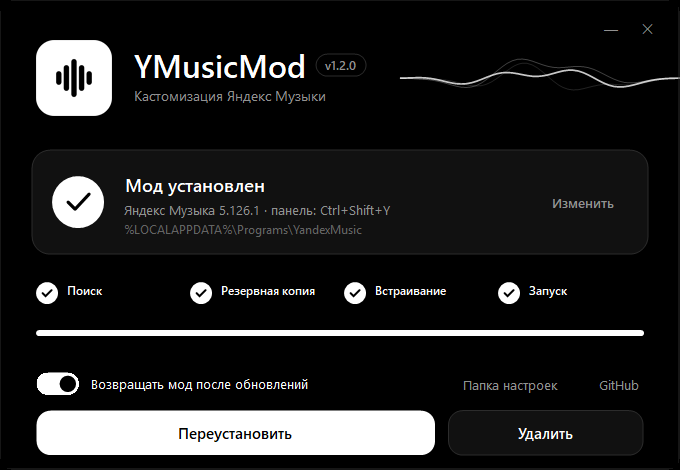

Всё настраивается в одной панели

Волна
Семь режимов прямо на видеокарте. Волна реагирует на реальный звук, держит ритм и работает над плеером или на весь фон за интерфейсом.
Плеер на весь экран
Фон из обложки, волна вокруг неё, обложка пульсирует в такт и наклоняется за мышью. Текст песни читается чисто, волна на него не заходит.
Звук
Студийная обработка с профилями, бас, баланс, своя скорость, slowed, nightcore и 8D. Громкость можно выравнивать по данным самого трека. Таймер сна плавно затихает.
Вид
Фото, GIF и видео на фон или размытая обложка текущего трека. Любой шрифт, свой логотип и анимации во всём приложении.
Discord
Обложка в высоком качестве, фото артиста, год и жанр, рабочие ссылки на трек и артиста. Строки статуса настраиваются, результат виден сразу.
Статистика
Время за день, месяц и всего, любимые часы, топ артистов и треков. Хранится только на вашем компьютере.
Настройки не теряются
Копии создаются сами каждый день и перед обновлением. Изменение можно отменить по Ctrl+Z, а любое действие найти по Ctrl+K.

Мини-плеер поверх игр
Не забирает фокус и сам прячется, когда запущено что-то полноэкранное. Управлять музыкой можно из любого окна: Ctrl+Alt+Space, стрелки и L.
Установка занимает минуту
Поставьте Яндекс Музыку для Windows, если её ещё нет.
Скачайте и запустите YMusicMod-Setup.exe.
Приложение перезапустится с модом. Панель открывается по Ctrl+Shift+Y.

Это безопасно для аккаунта?
Мод меняет только файлы приложения на вашем компьютере и перед этим делает резервную копию. Логин, пароль и подписку он не трогает и никуда не отправляет. Весь код открыт.
Windows предупреждает о неизвестном издателе
Файл не подписан платным сертификатом. Нажмите «Подробнее», затем «Выполнить в любом случае».
Что будет после обновления Яндекс Музыки?
Маленький фоновый процесс вернёт мод через несколько секунд. Если отключили эту опцию, просто запустите установщик ещё раз.
Как удалить?
Запустите установщик и нажмите «Удалить». Приложение вернётся к исходному виду, настройки останутся в папке %APPDATA%\YandexMusic\YMusicMod.